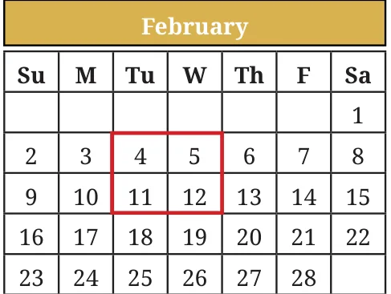
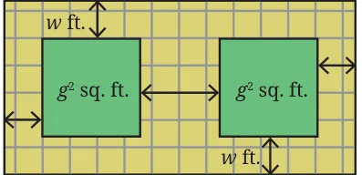
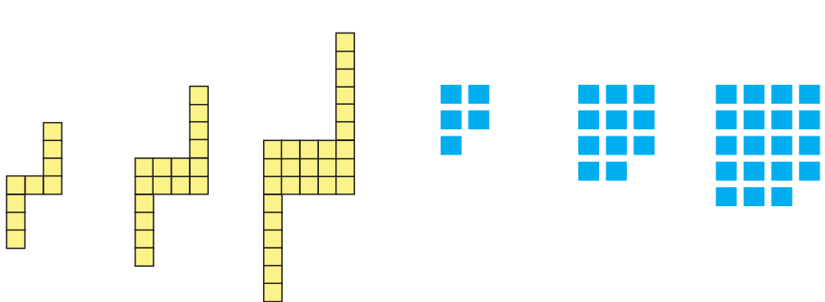

<!DOCTYPE html>
<html lang="en">
<head>
<meta charset="UTF-8">
<meta name="viewport" content="width=device-width,initial-scale=1">
<title>Figure it Out — We Distribute Yet Things Multiply</title>
<meta name="description" content="Class 8 Mathematics · Part 1 · We Distribute Yet Things Multiply · Figure it Out">
<link rel="icon" href="data:image/svg+xml,<svg xmlns='http://www.w3.org/2000/svg' viewBox='0 0 100 100'><text y='.9em' font-size='90'>📘</text></svg>">
<link rel="stylesheet" href="../../../assets/book.css">
<link rel="stylesheet" href="https://cdn.jsdelivr.net/npm/katex@0.16.11/dist/katex.min.css" crossorigin="anonymous">
</head>
<body>
<header class="topbar">
<div class="topbar-in">
  <div class="crumb">
    <span class="c1"><a href="../../../index.html">Library</a> · <a href="../../index.html">Class 8 Mathematics · Part 1</a></span>
    <span class="c2">We Distribute Yet Things Multiply · Figure it Out</span>
  </div>
  <a class="tb-btn" data-nav="prev" href="../../06-we-distribute-yet-things-multiply/08-this-way-or-that-way-all-ways-lead-to-the-bay-6.4/index.html" title="6.4 This Way or That Way, All Ways Lead to the Bay">←</a>
  <details class="drawer"><summary class="tb-btn" title="Sections in this chapter">☰</summary>
<div class="drawer-panel"><div class="dh">We Distribute Yet Things Multiply</div><a href="../01-chapter-opener/index.html">Chapter opener; 6.1 Some Properties of Multiplication; Increments in Products</a><a href="../02-figure-it-out/index.html">Figure it Out</a><a href="../03-fast-multiplications-using-the-distributive-property/index.html">Fast Multiplications Using the Distributive Property</a><a href="../04-special-cases-of-the-distributive-property-6.2/index.html">6.2 Special Cases of the Distributive Property; Square of the Sum/Difference of Two Numbers</a><a href="../05-investigating-patterns/index.html">Investigating Patterns</a><a href="../06-figure-it-out/index.html">Figure it Out</a><a href="../07-mind-the-mistake-mend-the-mistake-6.3/index.html">6.3 Mind the Mistake, Mend the Mistake</a><a href="../08-this-way-or-that-way-all-ways-lead-to-the-bay-6.4/index.html">6.4 This Way or That Way, All Ways Lead to the Bay</a><a href="../09-figure-it-out/index.html" aria-current="page">Figure it Out</a><a href="../10-summary/index.html">SUMMARY</a><a href="../11-figure-it-out/index.html">Figure it Out</a><a href="../12-figure-it-out/index.html">Figure it Out</a><a href="../13-figure-it-out/index.html">Figure it Out</a></div></details>
  <a class="tb-btn" data-nav="next" href="../../06-we-distribute-yet-things-multiply/10-summary/index.html" title="SUMMARY">→</a>
  <button class="tb-btn" data-theme-toggle title="Toggle light / dark" aria-label="Toggle light or dark theme">◐</button>
</div>
<div class="progress"><span style="width:85.6%"></span></div>
</header>
<main class="wrap">
<div class="sec-head">
  <p class="eyebrow"><a href="../index.html">Chapter 6 · We Distribute Yet Things Multiply</a></p>
  <h1>Figure it Out</h1>
  <p class="sec-meta">Textbook pages 19–21 · 11 figures</p>
</div>
<article class="prose">
<ul class="qlist">
<li><span class="mk">1.</span><span class="lt">Compute these products using the suggested identity.</span></li>
<li><span class="mk">(i)</span><span class="lt">46 using Identity 1A for (a + b)</span></li>
</ul>
<ul class="qlist">
<li><span class="mk">(ii)</span><span class="lt">\(397 \times 403\) using Identity 1C for (a + b) (a - b)</span></li>
<li><span class="mk">(iii)</span><span class="lt">91 using Identity 1B for (a - b)</span></li>
</ul>
<ul class="qlist">
<li><span class="mk">(iv)</span><span class="lt">\(43 \times 45\) using Identity 1C for (a + b) (a - b)</span></li>
<li><span class="mk">2.</span><span class="lt">Use either a suitable identity or the distributive property to find each</span></li>
</ul>
<p>of the following products.</p>
<ul class="qlist">
<li><span class="mk">(i)</span><span class="lt">(p \(- 1)\) (p \(+ 11)\)</span></li>
<li><span class="mk">(ii)</span><span class="lt">\((3a - 9b) (3a + 9b)\)</span></li>
<li><span class="mk">(iii)</span><span class="lt">\(- (2y + 5) (3y + 4)\)</span></li>
<li><span class="mk">(iv)</span><span class="lt">\((6x + 5y)\)</span></li>
</ul>
<ul class="qlist">
<li><span class="mk">(v)</span><span class="lt">\((2x - \frac{1}{2}\) )</span></li>
</ul>
<ul class="qlist">
<li><span class="mk">(vi)</span><span class="lt">\((7p) \times (3r) \times\) (p \(+ 2)\)</span></li>
</ul>
<figure class="fig wide"></figure>
<figure class="fig wide"></figure>
<ul class="qlist">
<li><span class="mk">3.</span><span class="lt">For each statement identify the appropriate algebraic expression(s).</span></li>
<li><span class="mk">(i)</span><span class="lt">Two more than a square number.</span></li>
</ul>
<div class="mathblock"><p>\(2 + s\) (s \(+ 2) s + 2 s + 4 2s 2 s\)</p></div>
<ul class="qlist">
<li><span class="mk">(ii)</span><span class="lt">The sum of the squares of two consecutive numbers</span></li>
</ul>
<div class="mathblock"><p>\(m + n\) (m + n) \(m + 1 m +\) (m \(+ 1)\)</p></div>
<div class="mathblock"><p>\(m +\) (m \(- 1)\) (m + (m \(+ 1)) (2m) + (2m + 1)\)</p></div>
<ul class="qlist">
<li><span class="mk">4.</span><span class="lt">Consider any 2 by 2 square of numbers in a calendar, as shown in the</span></li>
</ul>
<p>figure.</p>
<figure class="fig"></figure>
<p>Find products of numbers lying along each diagonal \(- 4 \times 12 = 48\), \(5 \times 11 = 55\). Do this for the other 2 by 2 squares. What do you observe about the diagonal products? Explain why this happens. Hint: Label the numbers in each 2 by 2 square as</p>
<figure class="fig side-fig"></figure>
<div class="mathblock"><p>a (a \(+ 1) a + 7\) (a \(+ 8)\)</p></div>
<ul class="qlist">
<li><span class="mk">5.</span><span class="lt">Verify which of the following statements are true.</span></li>
<li><span class="mk">(i)</span><span class="lt">(k \(+ 1)\) (k \(+ 2) -\) (k \(+ 3)\) is always 2.</span></li>
<li><span class="mk">(ii)</span><span class="lt">\((2q + 1) (2q - 3)\) is a multiple of 4.</span></li>
<li><span class="mk">(iii)</span><span class="lt">Squares of even numbers are multiples of 4, and squares of</span></li>
</ul>
<p>odd numbers are 1 more than multiples of 8.</p>
<ul class="qlist">
<li><span class="mk">(iv)</span><span class="lt">\((6n + 2) - (4n + 3)\) is 5 less than a square number.</span></li>
</ul>
<ul class="qlist">
<li><span class="mk">6.</span><span class="lt">A number leaves a remainder of 3 when divided by 7, and another</span></li>
</ul>
<p>number leaves a remainder of 5 when divided by 7. What is the remainder when their sum, difference, and product are divided by 7?</p>
<ul class="qlist">
<li><span class="mk">7.</span><span class="lt">Choose three consecutive numbers, square the middle one, and</span></li>
</ul>
<p>subtract the product of the other two. Repeat the same with other</p>
<figure class="fig wide"></figure>
<figure class="fig wide"></figure>
<p>sets of numbers. What pattern do you notice? How do we write this as an algebraic equation? Expand both sides of the equation to check that it is a true identity.</p>
<ul class="qlist">
<li><span class="mk">8.</span><span class="lt">What is the algebraic expression describing the following</span></li>
</ul>
<p>steps - add any two numbers. Multiply this by half of the sum of the two numbers? Prove that this result will be half of the square of the sum of the two numbers.</p>
<ul class="qlist">
<li><span class="mk">9.</span><span class="lt">Which is larger? Find out without fully computing the product.</span></li>
<li><span class="mk">(i)</span><span class="lt">\(14 \times 26\) or \(16 \times 24\)</span></li>
<li><span class="mk">(ii)</span><span class="lt">\(25 \times 75\) or \(26 \times 74\)</span></li>
<li><span class="mk">10.</span><span class="lt">A tiny park is coming up in Dhauli.</span></li>
</ul>
<figure class="fig table-fig side-fig"></figure>
<p>The plan is shown in the figure. The</p>
<p>two square plots, each of area g sq. ft., will have a green cover. All the remaining area is a walking path w ft. wide that needs to be tiled. Write an expression for the area that needs to be tiled.</p>
<ul class="qlist">
<li><span class="mk">11.</span><span class="lt">For each pattern shown below,</span></li>
<li><span class="mk">(i)</span><span class="lt">Draw the next figure in the sequence.</span></li>
<li><span class="mk">(ii)</span><span class="lt">How many basic units are there in Step 10?</span></li>
<li><span class="mk">(iii)</span><span class="lt">Write an expression to describe the number of basic units in</span></li>
</ul>
<h4 class="callout-h" id="s-step">Step .</h4>
<figure class="fig wide"></figure>
<p>Step 1 Step 2 Step 3 Step 1 Step 2 Step 3</p>
<figure class="fig wide"></figure>
</article>
<nav class="pager"><a class="" data-nav="prev" href="../../06-we-distribute-yet-things-multiply/08-this-way-or-that-way-all-ways-lead-to-the-bay-6.4/index.html"><span class="dir">← Previous</span><span class="t">6.4 This Way or That Way, All Ways Lead to the Bay</span><span class="ch">We Distribute Yet Things Multiply</span></a><a class="nx" data-nav="next" href="../../06-we-distribute-yet-things-multiply/10-summary/index.html"><span class="dir">Next →</span><span class="t">SUMMARY</span><span class="ch">We Distribute Yet Things Multiply</span></a></nav>
</main><footer class="site">Generated from the source textbook PDFs · text, figures and exercises belong to their respective publishers.</footer><script defer src="https://cdn.jsdelivr.net/npm/katex@0.16.11/dist/katex.min.js" crossorigin="anonymous"></script>
<script defer src="https://cdn.jsdelivr.net/npm/katex@0.16.11/dist/contrib/auto-render.min.js" crossorigin="anonymous"
  onload="renderMathInElement(document.body,{delimiters:[
    {left:'\\(',right:'\\)',display:false},
    {left:'$$',right:'$$',display:true},
    {left:'\\[',right:'\\]',display:true}],throwOnError:false,ignoredTags:['script','noscript','style','textarea','pre','code']})"></script>
<script src="../../../assets/book.js"></script>
<script defer src="../../../../assets/search.js?v=1789782769"></script>
<script defer src="../../../../assets/screenshot.js?v=1789782769"></script>
</body>
</html>
